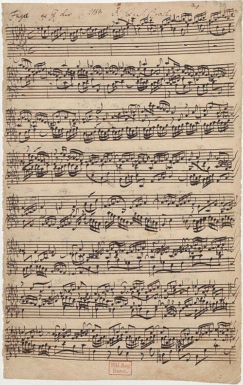

🔥 PUB PARTITION 🔥

-90% RECLAME
/stickers-vieille-partition-de-musique.jpg.jpg)


« La musique n'est pas dans les notes, mais dans le silence entre elles... Cependant, chez vous, cher cancrelat, même vos silences sont affreusement hors mesure ! »
- Wolfgang Amadeus Mozart (Revisité par le Maître Julianous)
L'étude du contrepoint sévère selon Mozart exige 14 heures de clavecin quotidien. Quiconque commet une quinte parallèle sera contraint de chanter la Fuga en La bémol majeur à l'envers devant l'assemblée !
« Par ma foi ! Il y a plus de quarante ans que je dis de la prose sans que j'en susse rien ; mais vous, bélître, il y a quarante ans que vous massacrez la portée sans en ressentir la moindre honte ! Que diable alliez-vous faire dans cette galère du solfège ? »
- D'après Molière (Le Bourgeois Gentilhomme, Acte II, Scène IV)
À la manière du Maître de Musique chez Molière, nous vous rappelons que : « Sans la musique, un État ne peut subsister. Tous les désordres, toutes les guerres qu'on voit dans le monde, n'arrivent que pour n'apprendre pas la musique et le contrepoint rigoureux ! »
« Vingt fois sur le métier remettez votre ouvrage :
Polissez-le sans cesse et le repolissez ;
Ajoutez quelqu'accord, et souvent effacez ;
Et si votre solfège est faux, recopiez cent fois le Traité d'Harmonie ! »
- Nicolas Boileau (L'Art Poétique, Chant I)
Exemple vivant de récital exécuté sous la férule de Julianous. Notez la posture et l'angoisse salutaire de l'exécutant.
Mozart² + Bach³ / Molière = Perfection Académique.